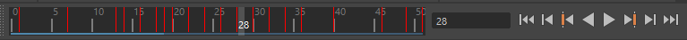

时间滑块(Time Slider)中的“缓存播放”(Cached Playback)状态行会变为不同的颜色以反映缓存的状况。当“缓存播放”(Cached Playback)处于活动状态并且动画存储在内存中时，状态行默认为蓝色。（您可以在颜色设置(Color Settings)窗口中更改此颜色。）
此蓝色条带是动画的“缓存播放”(Cached Playback)状态行，也是默认的“缓存播放”(Cached Playback)状态行。“缓存播放”(Cached Playback)动画状态行上方的粉红色条带是“缓存播放”(Cached Playback)动力学状态行。（请参见下面的“动力学”。）
- 动力学(Dynamics)
-
动力学“缓存播放”(Cached Playback)状态行是粉红色状态行，它与默认的蓝色动画“缓存播放”(Cached Playback)状态行分开。使用动力学“缓存播放”(Cached Playback)状态行，您可以在场景中与动画一起加载和刷新 nCloth 和 nParticle 动力学。
- 默认情况下，动力学“缓存播放”(Cached Playback)状态行处于活动状态，但您可以在缓存播放首选项(Cached Playback Preferences)或解算工具包(Evaluation Toolkit)的“缓存”(Caching)部分中禁用“动力学”(Dynamics)选项。
- 失效
-
每次在场景中更改动画时，缓存都会失效，这意味着它已过期，需要重画。当 Maya 检测到缓存中存储的内容与当前场景存在差异时，就会发生此失效行为。例如，如果您在曲线上添加了关键帧，则一些帧的曲线值将更改，从而使缓存失效。然后，更改的帧将重新缓存。
默认情况下，
“缓存播放”(Cached Playback)状态行的失效分段不会显示。如果想要查看重建的缓存部分和时间，则激活
缓存播放首选项(Cached Playback Preferences)中的
“显示无效帧”(Show Invalidated Frames)选项。

“缓存播放”(Cached Playback)状态行变为深蓝色以显示需要重建的区域
-
如果要
手动使缓存失效或重建缓存，则从
播放选项(Playback Options)的
“缓存播放”(Cached Playback)图标 的快捷菜单中清除缓存。（还有更多用于清除缓存的
高级选项，包括“失效”(Invalidate)，它允许您将当前缓存数据与场景中选择的项目断开连接，或者在
解算工具包(Evaluation Toolkit)“缓存”(Caching)部分中同步清除缓存。）
- 手动使缓存失效会将缓存与选定动画断开连接。当您想要重现仅操纵“某些”控制器时发生的情况时，请使缓存失效。
- 清除缓存会清空整个缓存，并丢弃存储的内容，因此所有内容都必须重建。此外，由于数据立即被删除，它的速度可能比缓存失效慢。如果您想将缓存擦除干净，请使用“清除缓存”(Flush Cache)。（您还可以通过播放选项(Playback Options)中的“缓存播放”(Cached Playback)图标 的快捷菜单清除缓存。）
- 警告状态
-
- 如果“缓存播放”(Cached Playback)遇到不支持的节点或内存不足，则禁用“缓存播放”(Cached Playback)，状态行和图标变为黄色 以表明缓存已停止。您可以继续工作，但使用“缓存播放”(Cached Playback)不会带来任何性能提升。
-
- 安全模式
- 当“缓存播放”(Cached Playback)遇到不支持的节点时，会触发此警告状态，因此无法将动画发送到内存。有关导致缓存停止的原因的消息将显示在脚本编辑器(Script Editor)中。
- 有关可能禁用“缓存播放”(Cached Playback)的时间的信息，请参见缓存播放(Cached Playback)限制。
- 缓存与内存
- 如果您的系统没有足够的内存 (RAM) 支持缓存进程，则缓存将停止。如果出现内存不足的情况，则帮助行(Help line)中会显示一条警告消息。更改 Maya 为“缓存播放”(Cached Playback)分配的内存量，或者指定希望缓存继续，而不论缓存播放首选项(Cached Playback Preferences)的内存限制如何。
注： 即使“缓存播放”(Cached Playback)停止，您也可以继续工作。只是不会有任何播放性能提升。
-
- 自定义缓存播放状态
- 您还可以在缓存播放首选项(Cached Playback Preferences)中更改状态行的默认外观、行为和位置。若要更改状态行的颜色，请参见颜色设置(Color Settings)窗口中的“缓存播放”(Cached Playback)部分。